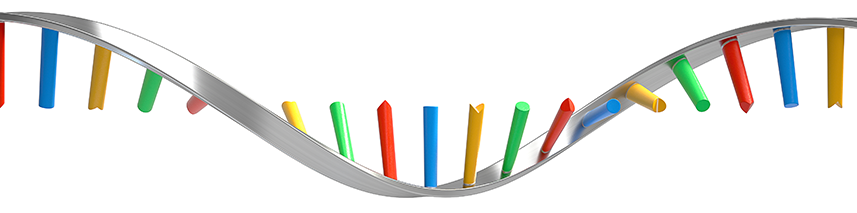

About Me

I am a mathematician turned biologist with 6 years of experience using computational and experimental approaches in leading research discoveries and
solutions across the spectrum of genomics.
I have a passion for building biologically-informed tools and algorithms that can guide us towards hidden patterns. I also hold proficiency in
Experimental Biology to prepare my own libraries and functionally validate my results.
Awards and Honors:
- 2022: Institute Scholar Award, Lewis-Sigler Institute for Integrative Genomics, Princeton University
- 2020: Most Energy Efficient/Sustainable Energy Hack Award, TreeHacks 2020, Stanford University
- 2019: Fellow of Impact Labs Coalition, a selective community of data scientists in the US.
- 2017: Finalists at YouFab Global Creative Awards for the VIVITA Project in Tokyo.
- 2016: Barbara Wiedner and Dorothy Vandercook Memorial Foundation Scholarship
- 2016: Young Leaders for Active Citizenship, Summer Camp, Full Scholarship
- 2015 KVPY Young Scientists Fellowship Recipient (All India Rank 450), Indian Institute of Science, Bangalore
My Experience with DNA and RNA
I love building hypothesis, exploring them, testing them, and validating them end-to-end. I have worked with a whole spectrum of genomic and transcriptomic assays, both experimentally and computationally.

Recent Projects
Robust machine learning to discover alternative polyA-site switches in RNA
October 2021

- Built a robust machine learning technique to discover alternative polyA-site switches in RNA-sequencing data.
- Built using Logistic Regression and Statistical tools in R
- Link to Nature Cell Bio publication
- Link to Repository
Statistical Learning to estimate stalling in Glycine Codons after tRNA knockout
March 2021

- Using Statistical Learning to estimate stalling in Glycine Codons after knocking out tRNAs
- Built using Logistic Regression and Statistical tools in R
- Link to Nature Communications publication
- Link to Repository
Automated web-app for QC and Visualisations of RNA-seq data
May 2020
- An automated web app built for Cleaning, Normalisation, QC, Statistical testing and visualisations of RNA-seq counts data.
- Built using Flask, Python, HTML, CSS, JS, Node.js and REST APIs.
- Link to deployed web application.
- Link to repository.
RECENT ARTICLES
Research Output
A metastasis-suppressive pathway of mRNA processing governs translational control from the nucleus.
Co-Author | San Francisco, CA | October 2021
- Modulating HNRNPC expression impacts the metastatic capacity of breast cancer cells in xenograft mouse models.
- My contribution: A small molecule, previously shown to induce a distal-to-proximal poly(A) site switching, counteracts the HNRNPC-PABPC4 driven deregulation of alternative polyadenylation and decreases the metastatic lung colonization by breast cancer cells in vivo.
- Link to paper.
ERα is an RNA-binding protein sustaining tumor cell survival and drug resistance
Co-Author | San Francisco, CA | July 2021
- ERα, a transcription factor critical for breast cancer, is an RNA-binding protein regulating post-transcriptional expression of stress response genes.
- My contribution: ERα RNA binding activity is critical for tumor growth and therapeutic response in target biomarkers.
- Link to paper.

Neuronal Nsun2 deficiency produces tRNA epitranscriptomic alterations and proteomic shifts impacting synaptic signaling and behavior
Co-Author | San Francisco / NYC | March 2021
- Understanding tRNA functions and the brain proteomic landscape, and its effect on cognition and complex behaviors.
- My Contribution: Establishing the causal link between tRNA knockout, codon stalling, and deregulation of Glycine.
- Link to paper.
Androgen Signaling Regulates SARS-CoV-2 Receptor Levels and Is Associated with Severe COVID-19 Symptoms in Men
Contributor | San Francisco, CA | October 2020
- Elevated androgen increases COVID-19 susceptibility and severity in men.
- Androgen signaling inhibition reduces SARS-CoV-2 infection in hESC lung organoids.
- Link to paper in Cell Stem-Cell.
- Link to scRNA-seq GEO Accession.
Automated analysis and visualizations of RNA-sequencing data in Atlantis, a Python-powered open-sourced web application.
Senior Thesis | San Francisco, CA | September 2019 - May 2020
- A scalable web application that eliminates the need for coding in RNA-sequencing data analysis through automated QC, Normalisation, statistical testing and seven standard visualisations.
- The application reduces redundancy of code and enables biologists to cover every aspects of their analysis.
- Link to Working paper

Effectiveness of nuclear isolation as an alternative to full-cell isolation for single-cell RNA-sequencing in Cardiomyocytes
Poster Presentation | Cambridge, MA | June 2019 - August 2019
- Presented a paper at the Novartis Institutes for Biomedical Research.
- Using data analytics, we proved the effectiveness of using nuclear isolation in cardiomyocytes as an alternative to full-cell isolation in Cardiomycoytes where full-cell isolation is very difficult.
Research Experience

University of California, San Francisco
Junior Scientist II | San Francisco, CA | October 2020 - Present
- Leading the analysis of a single-cell RNA-sequencing experiment in lung organoids to charachterize metastatis genes in-vitro.
- Contributor to Ribolog: A suite of regression-based tools for Ribosome profiling data analysis.
- Collaborating with the Baylor School of Medicine to analyse Ribosome Footprinting data.

University of Chicago - Argonne National Laboratory
Research Assistant | Chicago, IL | October 2019 - October 2020
- Redesigning the PCAWG variant-calling pipeline (DELLY) in CWL for 20% faster and more accurate charachterization of SNPs in tumor cells data.
- Designing more efficient algorithms for analysis of RNA-sequencing data using Parsl, a Python package for parallel-threads execution, aiming to reduce computational complexity by 30%.
Novartis Institutes for Biomedical Research
Summer Scholar | Cambridge, MA | June 2019 - August 2019
- Analysed the pre-clinical trials data of 40000 records for a single-cell RNA-sequencing experiment in Python to prove the effectiveness of more affordable cell isolation techniques.
- Built and deployed a Machine Learning model using sci-kit learn for prediction of drug sensitivity. Achieved 87% accuracy on a cell-line dataset by combining probabilistic classification algorithms.
- Built a web app in Python/ Flask to automate a data science pipeline for data visualisations that saved 300 hours/month of work for data analysts.

Clean Energy Associates
Data Science and Analytics Intern | San Francisco, CA (Remote) | May 2018 - March 2020
- Successfully designed an analytics dashboard as a summer intern for 25% more operational efficiency and then rehired as a remote lead for database management and analytics.
- Handled the company database and built 3 analytics dashboards for the senior team.
Minerva Schools at KGI
Teaching Assistant | San Francisco, CA | January 2019 - May 2020
- Teaching Assistant for a graduate-level Econometrics course.
- Amplified student grades by 40% over the semester for 150 students through training sessions in Python and Stata.
- Revamped the training resources for students and built 10 explanatory videos forBayesian Statistics and Predictive Modeling. Mentored 150 students and helped with code review.
Academic Research Assistant | San Francisco, CA | September 2016 - April 2017
- Collaborated with Dr. Megan Gahl's team evaluating the effect of varying water levels and temperature on the development rate of frogs. Conducted the literature review of 50 papers.
- Used impact evaluation techniques in R and Stata to infer a causal relationship between temperature and the development rate of frogs.
Technical Projects
Computational Statistics and Machine Learning
Machine learning model for breast cancer detection
February 2019
- Cleaned/Consolidated a public dataset of 700 breast cancer images and trained a Random Forest and SVM for a comparative analysis of efficiency.
- Devised an innovative probabalistic analysis model that extracts probabilities from sklearn's algorithms to redfine decision boundaries based on the bias in the initial algorithm.
- Link to Repository
Machine learning model for predicting loan application decisions
January 2019
- Used a public dataset of ~1 million loan applications and trained a machine learning model to build an automatically predict loan application decisions.
- Used approximation models to fill missing data.
- Completed a report on the importance of feature engineering and probabilistic analysis for best results.
- Link to Repository
Machine learning model for image analysis of clothes
March 2019
- Trained a machine learning model over the famous shirts/jerseys dataset.
- Used cross validation techniques, feature reduction (PCA) and image processing techniques to achieve 97% accuracy on image classification.
- Conduced a comparative analysis on the accuracy of decision boundaries in PCA Vs. LDA for image classification.
- Link to Repository
Automated Bayesian Inference Model for prediction of atmospheric CO2
December 2018
- Trained a PyStan model over the data of CO2 levels for the last 60 years.
- Utilized the model for prediction of CO2 levels in the next 40 years.
- The model also uses gradually increasing confidence intervals to predict CO2 levels based on 3 different scenarios (decreasing, constant and increasing global temperatures)
- Link to Repository
Analytical pricing model for grocery stores in Berlin
November 2018
- Trained a PyStan model over the manually collected price data from 60 stores in Berlin, Germany.
- Built visualizations in Python to understand various factors that make up the price of a commodity in Berlin.
- Built a regression model to understand the relation of product prices with rent in different areas of Berlin.
- Link to Repository
Modelling Financial Transactions using Kernel Density models
March 2019
- Trained kernel density models on an anonymized dataset of financial transactions.
- Modelled the number of transactions, the day of the transacton and month of a transaction to understand user behavior.
- Extracted insights on using density models to track fraud transactions.
- Link to Repository
Simulations, Networks and Object-Oriented Programming
A complex real-life simulation of a Roomba Vacuum Cleaner
April 2019
- Built a complex simulation of a Roomba Vacuum Cleaner in Python
- Built advanced rules for a realistic and intelligent vaccum cleaner.
- Watch the simulation in action here.
- Link to Repository
A simulation of social dynamics
March 2019
- Built a simulation to understand social dynamics and the trajectory of opinions in a society as humans interact
- Coded intelligent rules for network nodes (humans) to exchange opinions and build/break relationships.
- Link to Repository
A simple simulation of a Rocket
February 2019
- Built a simple simulation to showcase the use of Python classes for simulation
- Link to Repository
Other Experiences
SoftBank Ventures
Research Intern | Seoul, South Korea | October 2017 - December 2017
- Analyzed data on 250+ startups spread across 50 different metrics. Learned from top investment analysts about building rubrics and metrics to clean, analyse and visualize large datasets.
Mistletoe Inc.
Analyst | Tokyo, Japan | June 2017 - August 2017
- VIVITA aims to provide free access to research labs for Japanese Kids.
- Provided support and feedback to the technical team and assisted with product testing.
- Designed 3 different tools using 3-D printing and laser cutting.
- Finalists in YouFab Global Creative Awards 2017.
Looking for a computational biologist or data scientist? Look at my CV here. My contact details are inside it.